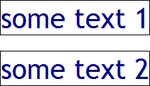

RN8003: IE6 IE7 IE8(Q) 会忽略 <uri> 类型的 CSS 值中的换行符与制表符
标准参考
Web 上可用的每种资源 - HTML 文档、图像、视频片段、程序等 - 由一个通用资源标志符（Uniform Resource Identifier，简称 "URI"，参见 [RFC3986]）进行定位。URL 是 Uniform Resource Location 的缩写，译为“统一资源定位符”。它是 URI 命名机制的一个子集。
根据 CSS2.1 规范中的描述，URI 表示为 <uri>。注意，定义 URI 使用 “url()”。如：
body { background: url("http://www.example.com/pinkish.png") }
URI 值的格式为：'url(' 后跟随可选的空白 (white space)，后跟随可选的单引号 (') 或双引号 (")，后跟随 URI 自身，后跟随可选的单引号或双引号，后跟随可选的空白，后跟随 ')'。两个引号字符必须相同。
根据 URI 规范中的描述，在某些情况下，为了使长的 URI 可以换行，可能会加入多余的空白 (空格、换行、制表等)。在获得 URI 时应忽略这些空白。
关于 <URI> 的更多信息，请参见 CSS2.1 规范 4.3.4 URLs and URIs 中的内容。
问题描述
在 IE6 IE7 IE8(Q) 中，若 <uri> 类型的 CSS 值中包含换行符与制表符，则浏览器会忽略 URI 中的这些空白而获取到正确的资源。
造成的影响
此问题会导致 URI 所指资源在某些浏览器在无法正确获得，如背景图片、鼠标指针资源。
受影响的浏览器
| IE6 IE7 IE8(Q) |
|---|
问题分析
根据问题描述构建如下测试代码：css_break.html
<!DOCTYPE html>
<html>
<head>
<style>
div.text { font-size:40px; float:left; border:1px solid black; color:navy; }
#text2 { background-image:url(go ogle.
gif); }
</style>
</head>
<body style="font:12px/1.2 'Trebuchet MS';">
<div id="text1" class="text" style="background-image:url(goo gle_s
mall.gif);">some text 1</div>
<br /><br /><br /><br /><br />
<div id="text2" class="text">some text 2</div>
</body>
</html>
上面代码中 DIV#text1 与 DIV#text2 设置了 'background-image' 特性，根据规范 'background-image' 特性的值为 <URI> 类型。URI 指向了两个图片资源地址。在各浏览器中效果如下：
| IE6 IE7 IE8(Q) | IE(S) Firefox Chrome Safari Opera |
|---|---|
 |
 |
可见，在 IE6 IE7 IE8(Q) 中，浏览器会忽略 <uri> 类型的 CSS 值中的换行符与制表符这些空白而获取到正确的资源。
在 其他浏览器 中，浏览器会将 URI 值作为错误值而舍弃。
解决方案
避免在 <uri> 类型的 CSS 值出现任何空白。
参见
知识库
相关问题
测试环境
| 操作系统版本: | Windows 7 Ultimate build 7600 |
|---|---|
| 浏览器版本: | IE6 IE7 IE8 Firefox 3.6.10 Chrome 8.0.522.0 dev Safari 5.0.2 Opera 10.63 |
| 测试页面: | css_break.html |
| 本文更新时间: | 2010-10-14 |
关键字
CSS uri URL background-image